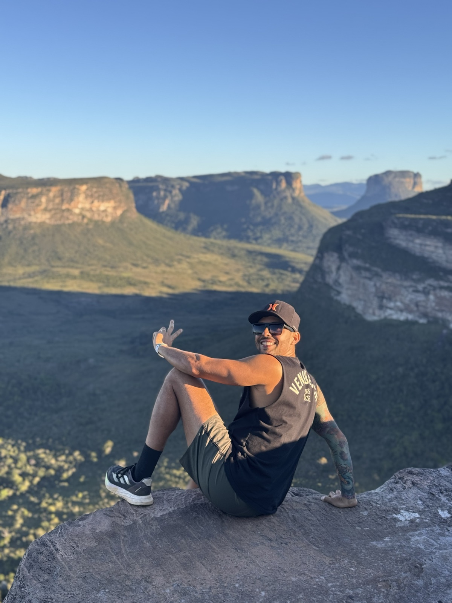
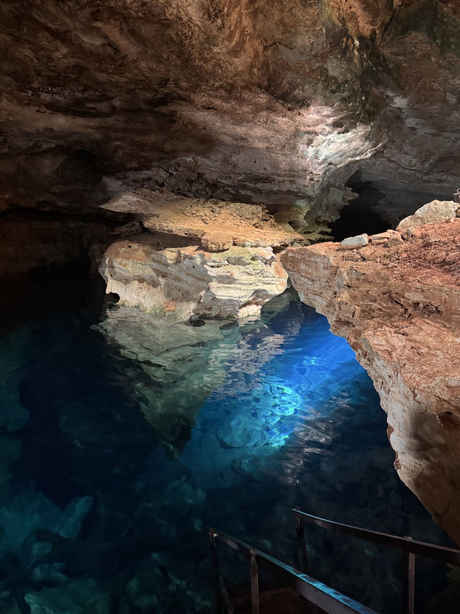
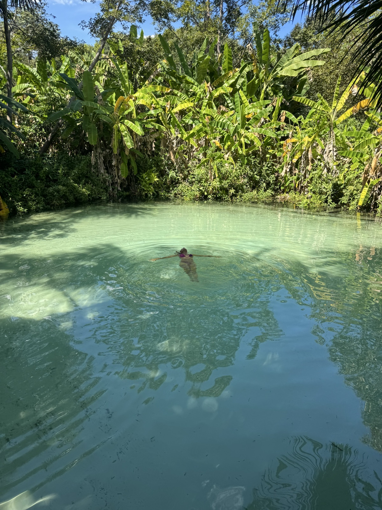
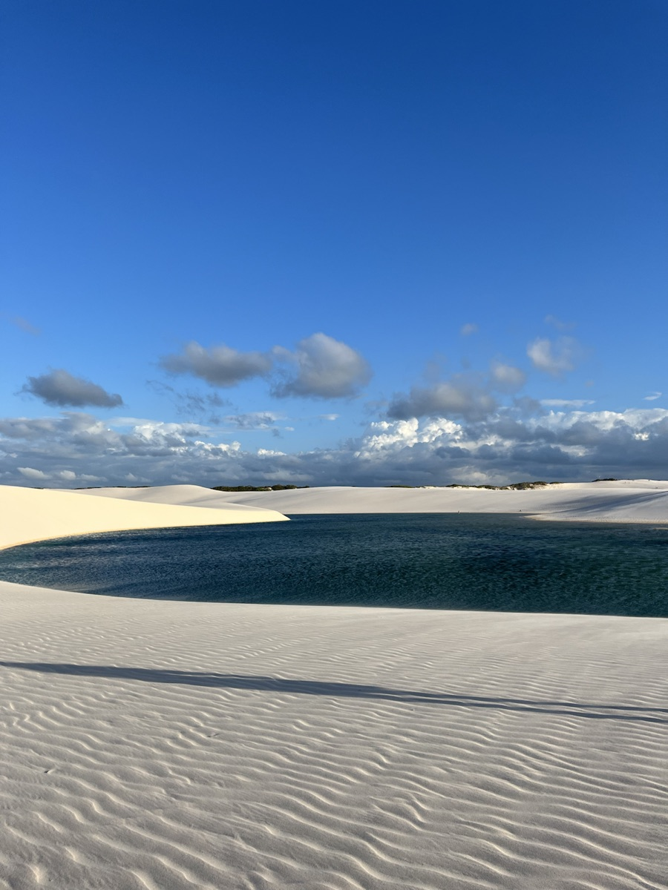
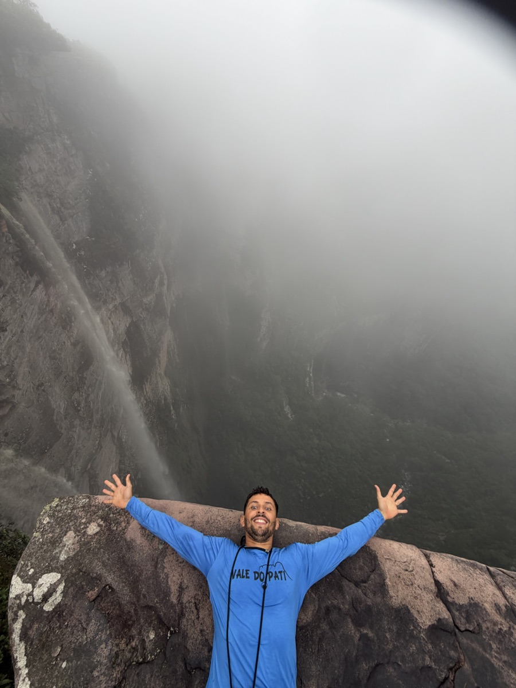

Planejamento personalizado
A proposta considera seu perfil, tempo, preferências e orçamento. O planejamento está incluído na contratação, sem cobrança separada.
VIAJAR É VIVER MAIS
Ecoturismo, aventura, cruzeiros e viagens personalizadas, planejadas de acordo com o seu jeito de viajar.
Da primeira ideia ao retorno para casa, você conta com o suporte da Rud Viagens.
EXPERIÊNCIAS RUD VIAGENS
Destinos para conhecer no seu ritmo, com planejamento de acordo com o seu perfil.
Encontrou um destino que combina com você?
Quero planejar minha viagem →PLANEJAMENTO, EXPERIÊNCIA E PROXIMIDADE
A proposta considera seu perfil, tempo, preferências e orçamento. O planejamento está incluído na contratação, sem cobrança separada.
Rudnei conhece pessoalmente destinos como Chapada Diamantina, Jalapão, Lençóis Maranhenses e Vale do Pati.
Você tem contato direto com Rudnei pelo WhatsApp antes e durante a viagem. A disponibilidade do suporte é combinada antes do embarque.
Passagens, hospedagem, passeios, seguro e roteiro podem fazer parte da sua proposta. Você escolhe o que precisa contratar.
COMO FUNCIONA
Destino, período, perfil, orçamento e o que não pode faltar.
Pesquisamos e organizamos as melhores opções para sua viagem.
Roteiro, serviços e condições explicados para você decidir.
Com os serviços contratados organizados e contato direto pelo WhatsApp, nos horários combinados antes do embarque.

POR TRÁS DA RUD VIAGENS
Rudnei sempre gostou de viajar, conhecer lugares novos e viver experiências diferentes. A Rud Viagens nasceu dessa paixão e da vontade de ajudar outras pessoas a fazerem o mesmo.
Hoje, a Rud Viagens une planejamento, experiência e atendimento próximo para transformar ideias em viagens reais. Rudnei participa desse cuidado, ajudando você a organizar os serviços de acordo com seu jeito de viajar.
EXPERIÊNCIAS REAIS
Registros do acervo da Rud Viagens, em lugares que Rudnei conhece pessoalmente.

Grutas e águas cristalinas no acervo da Rud Viagens.

Um registro dos fervedouros do destino.

Dunas e lagoas fotografadas durante as viagens.

Uma pausa junto à cachoeira durante o percurso.
SERVIÇOS DA RUD VIAGENS
Viagens nacionais e internacionais, com os serviços que você precisa.
Daquela viagem de aventura que você sempre sonhou até as férias em família: a Rud Viagens monta a viagem de acordo com você.
Pesquisa e emissão alinhadas ao perfil da sua viagem.
Chapadas, Lençóis, Jalapão e outros destinos de natureza.
Roteiros nacionais e internacionais para viver o mar com tranquilidade.
Pesquisa e reserva de hotéis e pousadas para cada estilo de viagem.
Planejamento completo de acordo com o seu tempo, perfil e preferências.
Proteção para você embarcar com mais segurança.
Estratégia para acumular e usar pontos em viagens.
Conhecer a consultoria →Passeios e logística no destino conforme os serviços contratados.
Reserva de veículo de acordo com o destino e o perfil da sua viagem.
Quer contratar um serviço ou organizar a viagem completa?
Falar com a Rud Viagens →DÚVIDAS FREQUENTES
Sim. A proposta considera seu perfil, período, duração e preferências.
Conte para a Rud Viagens o destino, o período e suas preferências pelo WhatsApp. Montamos uma proposta para você.
As páginas apresentam serviços que podem compor o roteiro. As inclusões e exclusões da sua viagem são confirmadas na proposta antes da contratação.
Sim. A Rud Viagens pode ajudar com passagens, hospedagem, seguro, passeios ou o planejamento completo.
Chame a Rud Viagens no WhatsApp e conte a ideia da sua viagem. A conversa começa sem compromisso.
Sim. Conheça as opções na página de Cruzeiros e fale pelo WhatsApp para receber uma proposta.
Sim. Você pode contratar a passagem aérea ou combinar outros serviços, como hospedagem, seguro, passeios e aluguel de carro.
Sim. A Rud Viagens organiza viagens nacionais e internacionais de acordo com seu perfil e os serviços que você deseja contratar.
Sim. A consultoria de milhas aéreas combina um encontro individual com acompanhamento nas primeiras etapas de aplicação da estratégia.
Você conta seu destino, período, perfil e orçamento. A Rud Viagens pesquisa e organiza uma proposta com roteiro, serviços e condições. O planejamento está incluído na contratação, sem cobrança separada.
Você tem contato direto com Rudnei pelo WhatsApp. A disponibilidade do atendimento é combinada antes do embarque.
O atendimento é exclusivamente online. Você pode conversar e organizar sua viagem pelo WhatsApp.